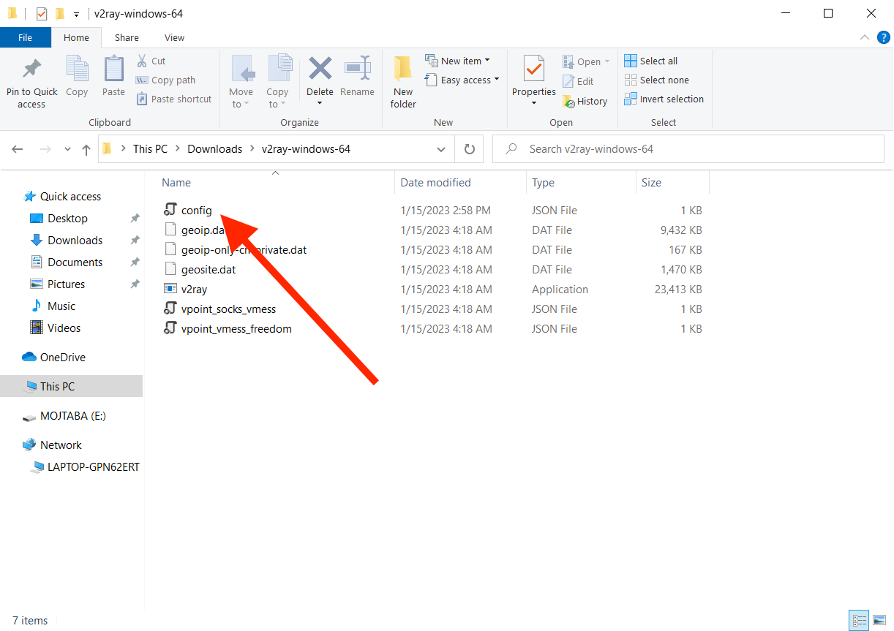
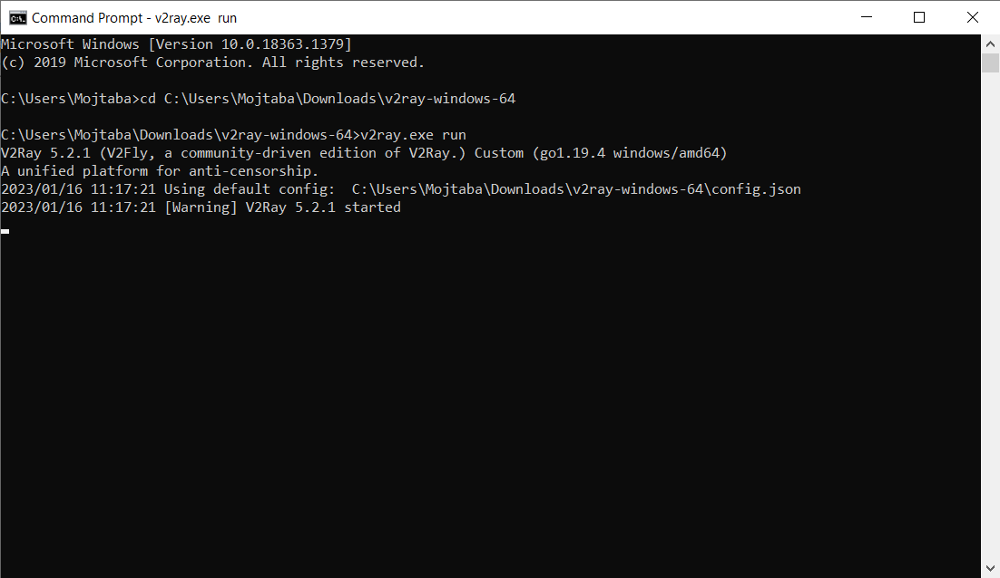
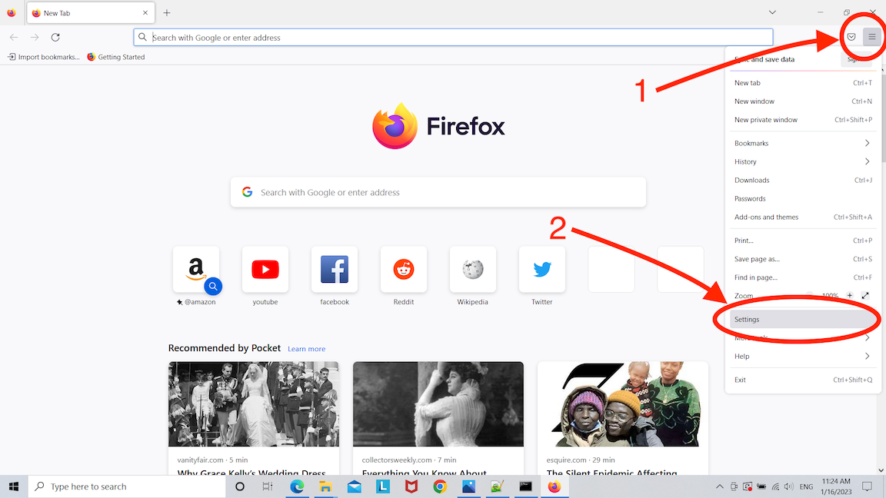
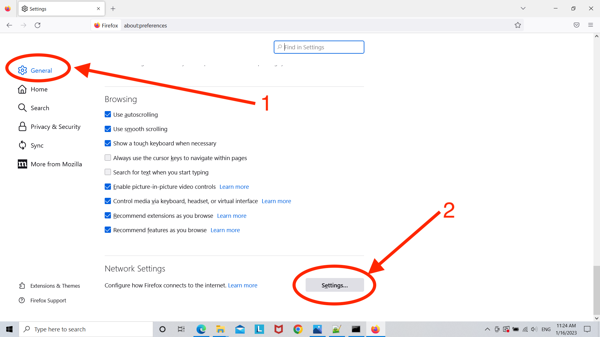
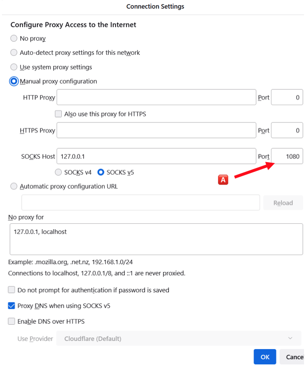
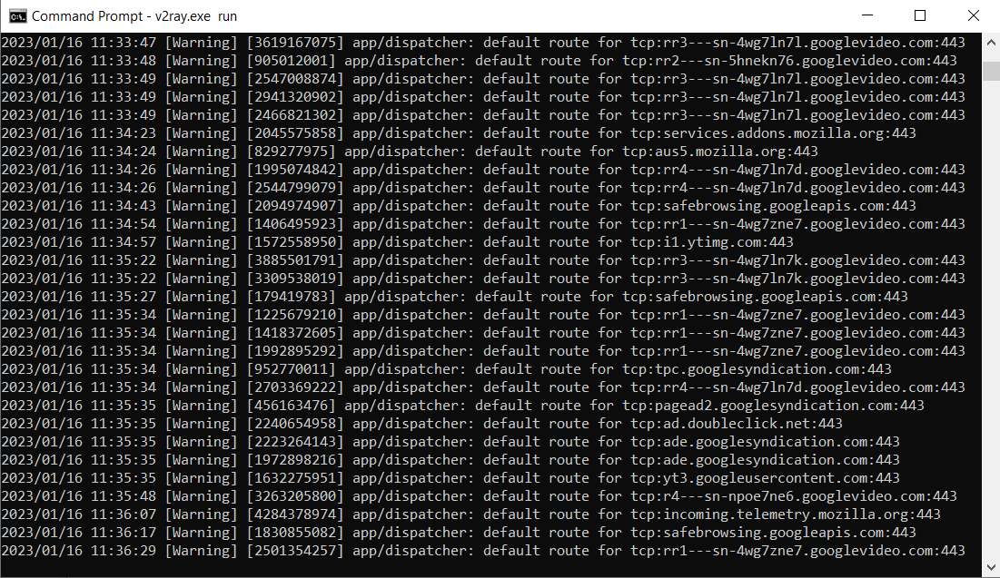

وصل شدن به پروکسی
پیش نیاز
شما برای وصل شدن به این پروکسی اول نیاز به دو چیز دارید:
اگر از قبل این دو را داشتید میتوانید باقی این دستورالعمل را ادامه دهید برای وصل شدن به اینترنت آزاد. اگر نه، لطفا با بنده یا شخص دیگری که دسترسی به اینترنت آزاد دارد و توانایی فراهم کردن یک سرور را دارد تماس بگیرید.
نصب روی ویندوز
اولین قدم راه اندازی نرم افزار v2ray روی دستگاهتان است. میتوانید آخرین نسخه آن را از اینجا دانلود کنید. آخرین نسخه در دسترس را پیدا کرده و سپس روی کلیک کنید تا بسته ویندوز آن را که به صورت یک فایل زیپ شده است پیدا کنید.

پس از دانلود فایل و آنزیپ کردن وارد پوشه شده و فایل config را باز کنید
برنامهای مثل Notepad++ میتواند گزینه خوبی برای ویرایش این فایل باشد. قسمتهایی که با شماره علامتگذاری شدهاند (1️⃣، 2️⃣، 3️⃣) باید مطابق اطلاعاتی که در قسمت پیش نیازها به آن اشاره شد باشند. ورودی که با 🅰️ علامتگذاری شده است منحصر به کامپیوتر شما میباشد. بعدتر از آن برای تنظیمات برنامهای که از پروکسی استفاده خواهد کرد بهره خواهیم برد.
{
"inbounds": [
{
"port": 1080, // 🅰️
"protocol": "socks",
"sniffing": {
"enabled": true,
"destOverride": ["http", "tls"]
},
"settings": {
"auth": "noauth"
}
}
],
"outbounds": [
{
"protocol": "vmess",
"settings": {
"vnext": [
{
"address": "***********", // 1️⃣
"port": ****, // 2️⃣
"users": [
{
"id": "*************************" // 3️⃣
}]
}]
}
}]
}
برنامه Command Prompt ویندوز را باز کرده و با آن به پوشه v2ray بروید و آن را اجرا کنید.
اگر پس از اجرا پیامی شبیه بالا دریافت کردید، اجرای سرور پروکسی روی دستگاه شما موفقیت آمیز بوده است. مرحله بعدی تنظیم بر روی مرورگر یا سایر برنامههایی که از آن استفاده میکنند خواهد بود که در ادامه توضیح داده شده است.
فایرفاکس
به صفحه تنظیمات فایرفاکس بروید.
تنظیمات پروکسی را همانطور که اینجا نشان داده شده است باز کنید:
تنظیمات پروکسی را شبیه به تنظیمات زیر اضافه کنید. به ورودی که با 🅰️ علامتگذاری شده است دقت کنید. این عدد باید دقیقا با عددی که در فایل config با همین نشان علامتگذاری شده بود منطبق باشد.
اگر نمیخواهید برای سایتی از این پروکسی استفاده کنید (به عنوان مثال سایتهای داخلی که دسترسی آنها از خارج محدود شده است) آنها را به No proxy for اضافه کنید. بین آنها ویرگول استفاده کنید (به مثالی که خود فایرفاکس برای این گزینه ارائه داده دقت کنید).
پس از تایید تنظیمات تلاش کنید وب سایتی که فیلتر است را باز کنید. همزمان به صفحه Command Prompt که در آن اجرا میشود هم دقت کنید. باید چیزی شبیه به این ببینید بدون پیغام Error.
